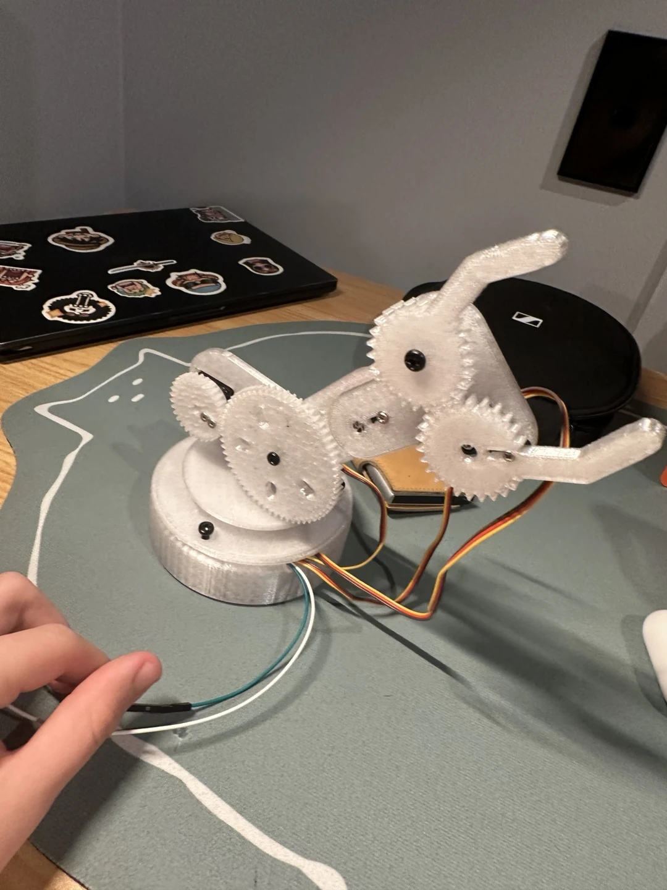
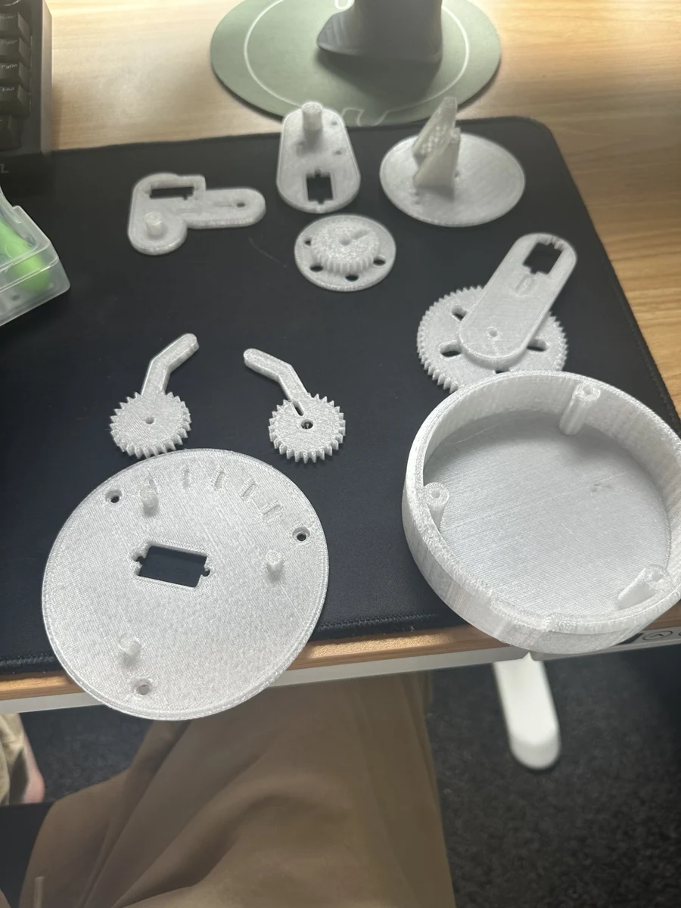
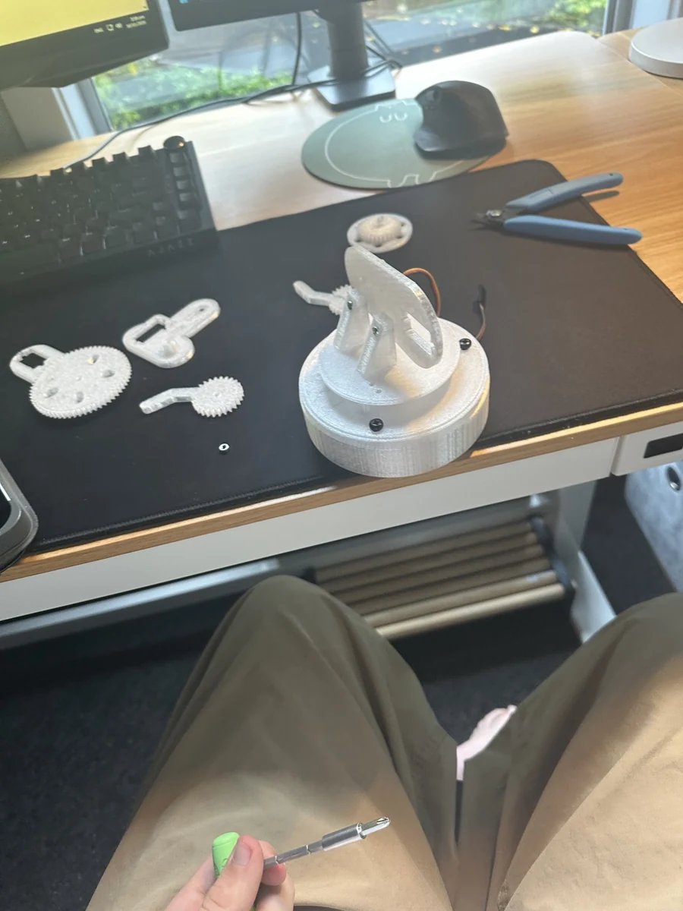
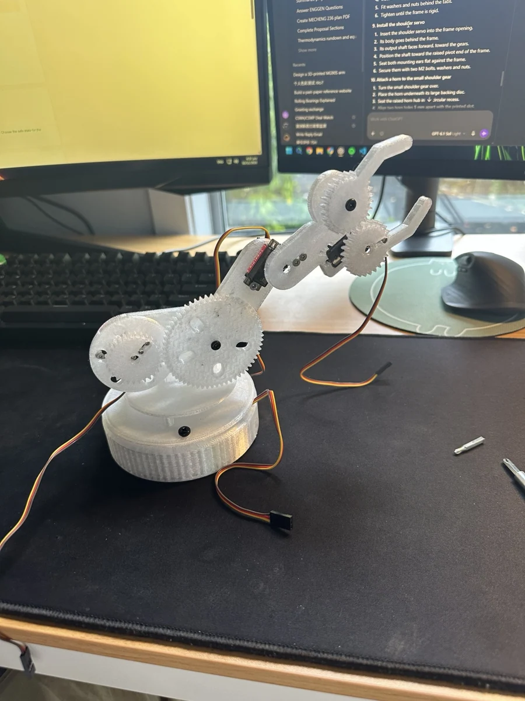
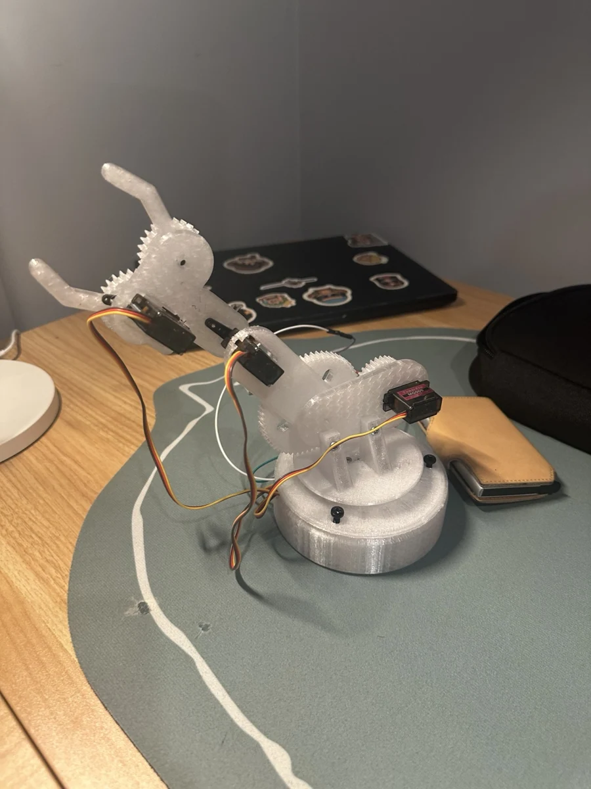

← All projects03 / 08
Robotic Arm.
- Design and build
- 1 day
- Print limit
- 1 build plate
- Actuation
- MG90S only

Designing within one build plate
All of the printed parts had to fit on one build plate. I designed the arm, printed the parts and assembled it in a single day.
Building around MG90S servos
MG90S servos were the only actuators. The assembled arm has a rotating base and a geared, two-finger gripper.
Build photos




NEXT PROJECT · 04Gearbox Design